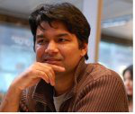

Title: New Horizons in IoT Workflows Provisioning in Edge and Cloud Datacentres for Fast Data Analytics New Horizons in IoT Workflows Provisioning in Edge and Cloud Datacentres for Fast Data Analytics
 Speaker: Professor Rajiv Ranjan, Newcastle University, United Kingdom
Abstract: Supporting Internet of Things (IoT) workflow enactment/execution on a combination of computational resources at the network edge and at a datacentre remains a challenge. Increasing volumes of data being generated through smart phones, IoT (Internet of Things) devices (which can vary significantly in scope and capability), need to be processed in a timely manner. Current practice involves using edge nodes (e.g. sensors or other low-capacity devices) as a means to acquire/collect data (i.e. as an "observation" mechanism). Subsequently, this data is transmitted to a datacentre/cloud for analysis/insight. Increasingly, the limitation with the use of a large-scale, centralised datacentre is being realised (such as speed of response for latency-sensitive applications), with the emergence of a number of paradigms to address this concern -- such as fog computing, edge computing, Cloud-of-Things, etc. All of these propose the use of dedicated servers (with varying capacity and capability) within micro/nano datacentres at the network edge, to overcome latency constraints associated with moving data to a central facility, and (lack of use of) increasing computational capability within edge devices. These paradigms also closely align with work in content distribution networks (e.g. from Akamai CDNs), which attempt to place data servers within one (or a small number of) hop of end users (currently 85% of users are supported in this way, with >175K Akamai servers)
A key objective of this keynote talk is to understand how such emerging paradigms can be used to enable cloud systems (supported through large scale computational facilities) to be "stretched" to the network edge, to enable data-driven IoT workflows to be enacted efficiently over such combined infrastructure. We propose the combined use of (varying) capability at the network edge (referred to as an "Edge Datacentre" (EDC)) with capability within a Cloud Datacentre (CDC). Collectively, IoT devices and edge resources, like gateways (Raspberry Pi 3), software-defined network systems (Huawei CloudEngine 6800) and smart phones equipped with sensors, constitute a new set of computing resources -- and as potential components of an EDC. The keynote talk will have the following outline: 1) Overview of the research challenges involved with composing and orchestrating complex IoT workflows in cloud-edge continuum infrastructure; 2) Discuss two case studies in healthcare and smart cities domain to understand how data-driven workflows can be applied to create/compose next-generation IoT applications; 3) Discuss our experience with running United Kingdom’s largest IoT infrastructure, namely, the Urban Observatory (http://www.urbanobservatory.ac.uk/)
Biography: Professor Rajiv Ranjan is an Australian-British computer scientist, of Indian origin, known for his research in Distributed Systems (Cloud Computing, Big Data, and the Internet of Things). He is University Chair Professor for the Internet of Things research in the School of Computing of Newcastle University, United Kingdom. He is an internationally established scientist in the area of Distributed Systems (having published about 300 scientific papers). He has secured more than $12 Million AUD (£6 Million+ GBP) in the form of competitive research grants from both public and private agencies. He is an innovator with strong and sustained academic and industrial impact and a globally recognized R&D leader with the proven track record. He serves on the editorial boards of top quality international journals including IEEE Transactions on Computers (2014-2016), IEEE Transactions on Cloud Computing, ACM Transactions on the Internet of Things, The Computer (Oxford University), The Computing (Springer) and Future Generation Computer Systems. He led the Blue Skies section (department, 2014-2019) of IEEE Cloud Computing, where his principal role was to identify and write about most important, cutting-edge research issues at the intersection of multiple, inter-dependent research disciplines within distributed systems research area including Internet of Things, Big Data Analytics, Cloud Computing, and Edge Computing. He is one of the highly cited authors in computer science and software engineering worldwide (h-index=52, g-index=158, and 15800+ google scholar citations, h-index=38 and 8200+ scopus citations).